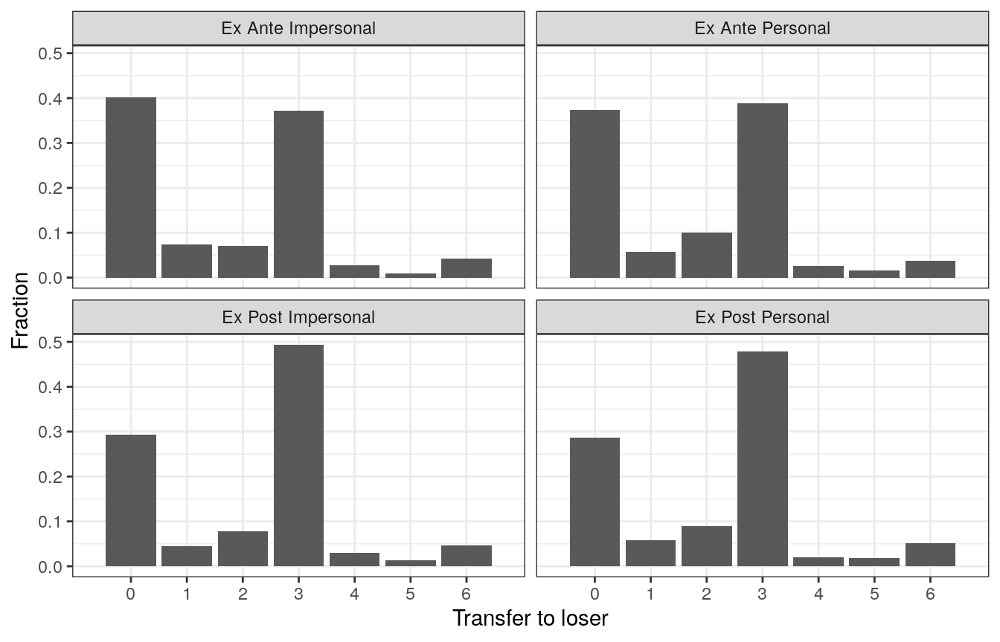
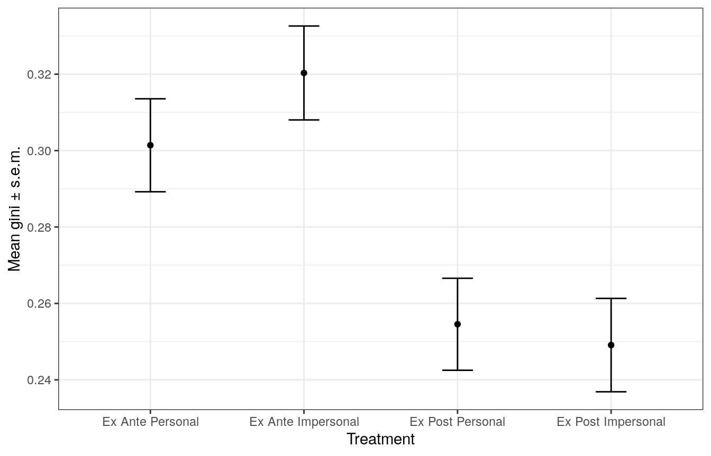

experiment-results.Rmdlibrary(tidyverse)
#> ── Attaching packages ───────────────────────────────────────────────────────────────────────────────────────────────────────────────────────── tidyverse 1.3.0 ──
#> ✓ ggplot2 3.2.1 ✓ purrr 0.3.3
#> ✓ tibble 2.1.3 ✓ dplyr 0.8.4
#> ✓ tidyr 1.0.2 ✓ stringr 1.4.0
#> ✓ readr 1.3.1 ✓ forcats 0.4.0
#> ── Conflicts ──────────────────────────────────────────────────────────────────────────────────────────────────────────────────────────── tidyverse_conflicts() ──
#> x dplyr::filter() masks stats::filter()
#> x dplyr::lag() masks stats::lag()
library(mmtalent)
library(stargazer)
#>
#> Please cite as:
#> Hlavac, Marek (2018). stargazer: Well-Formatted Regression and Summary Statistics Tables.
#> R package version 5.2.2. https://CRAN.R-project.org/package=stargazer
df <- prepare_data(mmtalent_df, populationweights2016)df %>% ggplot(aes(x=payment_low_worker-2,y = (..count..)/tapply(..count..,..PANEL..,sum)[..PANEL..]) ) +
geom_bar() +
theme_bw() +
facet_wrap(. ~ treatment) +
scale_x_discrete(limits=c(0,1,2,3,4,5,6)) +
labs(x = "Transfer to loser",
y = "Fraction")
dtm <- df %>% group_by(treatment) %>% summarize(se_gini = weighted.sd(gini, wgt)/sqrt(n()),
mean_gini = weighted.mean(gini, wgt))
dtm %>% ggplot(aes(x=treatment, y=mean_gini)) +
geom_point() +
geom_errorbar(aes(ymin=mean_gini - se_gini, ymax=mean_gini + se_gini), width=0.2) +
ylab("Mean gini \u00B1 s.e.m.") + xlab("Treatment") + theme_bw()
We look at two different outcomes. The first is the gini coefficient, which (as before) is between 0 and 0.6 (there is a base income of (2,2) that cannot be lowered, so max inequality is (8,2) or (2,8)). The second outcome is a dummy indicator for maximum inequality (or giving nothing to the worst off, “nothingtw” in the table below).
R1 <- lm(gini ~ treatment, data = df, weights=wgt)
R2 <- lm(gini ~ treatment + age + as.factor(income_category) + as.factor(edu_category) + as.factor(gender), data = df, weights=wgt)
R3 <- lm(nothingtw ~ treatment, data = df)
R4 <- lm(nothingtw ~ treatment + age + as.factor(income_category) + as.factor(edu_category) + as.factor(gender), data = df, weights=wgt)
df_left <- df %>% filter(left==1)
df_right <- df %>% filter(left==0)
R5 <- lm(gini ~ treatment + age + as.factor(income_category) + as.factor(edu_category) + as.factor(gender), data = df_left, weights=wgt)
R6 <- lm(gini ~ treatment + age + as.factor(income_category) + as.factor(edu_category) + as.factor(gender), data = df_right, weights=wgt)
R7 <- lm(nothingtw ~ treatment + age + as.factor(income_category) + as.factor(edu_category) + as.factor(gender), data = df_left, weights=wgt)
R8 <- lm(nothingtw ~ treatment + age + as.factor(income_category) + as.factor(edu_category) + as.factor(gender), data = df_right, weights=wgt)Table:
stargazer(R1, R2, R5, R6, R3, R4, R7, R8,
column.labels = c("All", "Left","Right","All", "Left","Right"), column.separate = c(2,1,1,2,1,1),
style="aer", type="text", keep.stat=c("rsq", "n"))
#>
#> ===========================================================================================================================
#> gini nothingtw
#> All Left Right All Left Right
#> (1) (2) (3) (4) (5) (6) (7) (8)
#> ---------------------------------------------------------------------------------------------------------------------------
#> treatmentEx Ante Personal -0.020 -0.021 -0.045 -0.013 -0.033 -0.033 -0.107* -0.008
#> (0.017) (0.017) (0.034) (0.020) (0.031) (0.031) (0.060) (0.036)
#>
#> treatmentEx Post Impersonal -0.082*** -0.083*** -0.049 -0.095*** -0.105*** -0.131*** -0.078 -0.150***
#> (0.017) (0.017) (0.034) (0.020) (0.031) (0.031) (0.060) (0.036)
#>
#> treatmentEx Post Personal -0.083*** -0.084*** -0.103*** -0.077*** -0.107*** -0.143*** -0.167*** -0.133***
#> (0.017) (0.017) (0.033) (0.020) (0.031) (0.030) (0.059) (0.035)
#>
#> age -0.000 -0.001** -0.000 0.002** 0.001 0.002**
#> (0.000) (0.001) (0.000) (0.001) (0.001) (0.001)
#>
#> as.factor(income_category) 30 k- 59 999 -0.058** -0.035 -0.059* -0.085* -0.061 -0.082
#> (0.028) (0.053) (0.032) (0.050) (0.094) (0.058)
#>
#> as.factor(income_category)100k - 149 999 -0.029 -0.032 -0.024 -0.029 -0.053 -0.006
#> (0.030) (0.055) (0.035) (0.053) (0.096) (0.063)
#>
#> as.factor(income_category)60 k - 99 999 -0.027 -0.037 -0.021 -0.021 -0.027 -0.015
#> (0.028) (0.053) (0.032) (0.049) (0.093) (0.057)
#>
#> as.factor(income_category)Less than 29 999 -0.043 -0.079 -0.030 -0.056 -0.102 -0.037
#> (0.029) (0.056) (0.034) (0.052) (0.099) (0.060)
#>
#> as.factor(edu_category)Bachelor -0.010 -0.111** 0.033 -0.029 -0.184** 0.037
#> (0.023) (0.046) (0.026) (0.041) (0.080) (0.047)
#>
#> as.factor(edu_category)High School/GED 0.029 0.052 0.031 0.037 0.038 0.047
#> (0.023) (0.051) (0.026) (0.041) (0.090) (0.046)
#>
#> as.factor(edu_category)Masters -0.008 -0.090* 0.032 -0.066 -0.229** 0.017
#> (0.027) (0.051) (0.031) (0.047) (0.090) (0.056)
#>
#> as.factor(edu_category)No High School 0.056 0.030 0.065 0.092 -0.021 0.118
#> (0.040) (0.100) (0.044) (0.071) (0.177) (0.078)
#>
#> as.factor(edu_category)PhD -0.081* -0.101 -0.074 -0.131 -0.199 -0.105
#> (0.046) (0.086) (0.054) (0.082) (0.152) (0.097)
#>
#> as.factor(edu_category)Professional (JD/MD) 0.055 0.006 0.083 0.044 0.030 0.041
#> (0.049) (0.080) (0.062) (0.087) (0.141) (0.111)
#>
#> as.factor(edu_category)Some college 0.014 -0.085* 0.044* 0.013 -0.157* 0.065
#> (0.023) (0.046) (0.026) (0.040) (0.082) (0.046)
#>
#> as.factor(gender)male 0.022* 0.005 0.020 0.018 -0.007 0.013
#> (0.012) (0.025) (0.014) (0.022) (0.043) (0.026)
#>
#> Constant 0.327*** 0.369*** 0.457*** 0.336*** 0.445*** 0.432*** 0.549*** 0.390***
#> (0.012) (0.038) (0.073) (0.043) (0.022) (0.067) (0.129) (0.077)
#>
#> Observations 2,001 2,001 482 1,519 2,001 2,001 482 1,519
#> R2 0.018 0.029 0.083 0.032 0.009 0.026 0.060 0.029
#> ---------------------------------------------------------------------------------------------------------------------------
#> Notes: ***Significant at the 1 percent level.
#> **Significant at the 5 percent level.
#> *Significant at the 10 percent level.